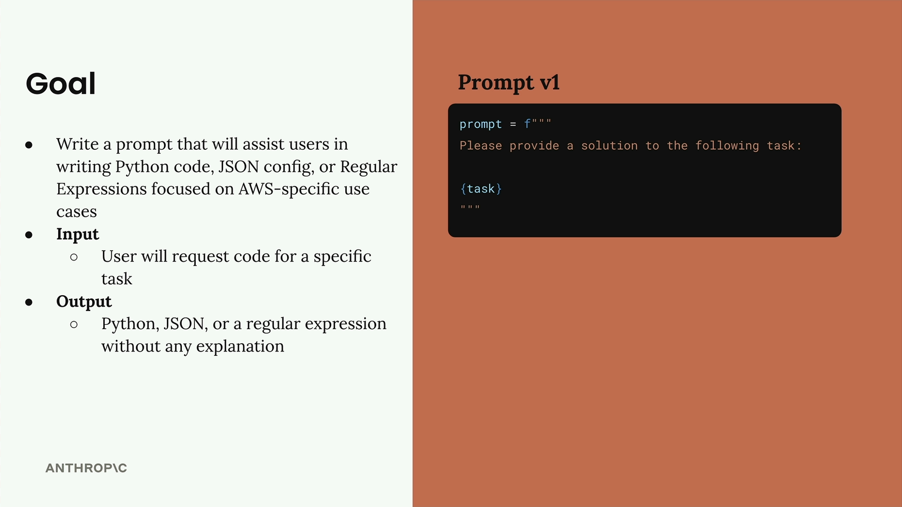
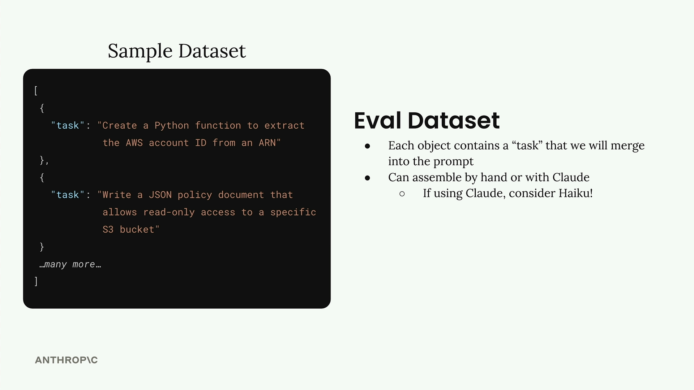

Генерация тестового датасета
Чему научитесь
Видео 4:44 и текст урока
К концу урока вы сможете:
- сформулировать цель промпта, который будете оценивать;
- сгенерировать датасет тестовых задач с помощью Claude;
- сохранить датасет в файл для последующих прогонов.
Видео и текст урока.
Смотреть урок на Skilljar Generating test datasets · 4:44Собственный процесс оценки промпта начинается с хорошего промпта и генерации тестовых данных, на которых видно, насколько хорошо он работает. Разберём, как настроить систему оценки для промпта, который помогает пользователям писать код под AWS.
Цель
Наш промпт должен помогать пользователям получать три вида результата для задач AWS:
- код на Python;
- конфигурационные файлы JSON;
- регулярные выражения.
Главное требование: когда пользователь просит помочь с задачей, мы возвращаем чистый результат в одном из этих форматов — без пояснений, заголовков и подписей.

Исходный промпт (версия 1):
prompt = f"""
Please provide a solution to the following task:
{task}
"""
Датасет для оценки
Датасет для оценки содержит входные данные, которые мы будем подставлять в промпт. Для каждой пары «промпт + вход» мы запустим промпт и проанализируем результат.
Датасет будет массивом JSON-объектов, где у каждого объекта есть свойство "task" — описание того, что должен сделать Claude. Такой датасет можно составить вручную или сгенерировать автоматически с помощью Claude.

task, например «Create a Python function to extract the AWS account ID from an ARN».Раз мы генерируем тестовые данные, это отличный повод взять более быструю модель — Haiku — вместо полноразмерной модели Claude.
Генерируем тестовые данные кодом
Напишем функцию, которая автоматически генерирует тестовый датасет. Сначала понадобятся вспомогательные функции для работы с Claude:
def add_user_message(messages, text):
user_message = {"role": "user", "content": text}
messages.append(user_message)
def add_assistant_message(messages, text):
assistant_message = {"role": "assistant", "content": text}
messages.append(assistant_message)
def chat(messages, system=None, temperature=1.0, stop_sequences=[]):
params = {
"model": model,
"max_tokens": 1000,
"messages": messages,
"temperature": temperature
}
if system:
params["system"] = system
if stop_sequences:
params["stop_sequences"] = stop_sequences
response = client.messages.create(**params)
return response.content[0].text
Теперь создадим функцию генерации датасета:
def generate_dataset():
prompt = """
Generate an evaluation dataset for a prompt evaluation. The dataset will be used to evaluate prompts that generate Python, JSON, or Regex specifically for AWS-related tasks. Generate an array of JSON objects, each representing task that requires Python, JSON, or a Regex to complete.
Example output:
```json
[
{
"task": "Description of task",
},
...additional
]
```
* Focus on tasks that can be solved by writing a single Python function, a single JSON object, or a single regex
* Focus on tasks that do not require writing much code
Please generate 3 objects.
"""
Чтобы надёжно разобрать JSON из ответа, используем prefill и стоп-последовательности:
messages = []
add_user_message(messages, prompt)
add_assistant_message(messages, "```json")
text = chat(messages, stop_sequences=["```"])
return json.loads(text)
Проверяем генерацию
Запустим функцию и посмотрим, какие тестовые случаи получатся:
dataset = generate_dataset() print(dataset)
Должны вернуться три разных тестовых случая, покрывающих нужные форматы: функции на Python, конфигурации JSON и регулярные выражения для задач AWS.
Сохраняем датасет
Получив датасет, сохраним его в файл, чтобы потом легко загружать при оценке:
with open('dataset.json', 'w') as f:
json.dump(dataset, f, indent=2)
В папке с ноутбуком появится файл dataset.json со списком задач, готовым для оценки промпта.
С этой основой у вас есть системный способ генерировать тестовые данные и проверять, насколько хорошо ваши промпты справляются с разными задачами по коду для AWS.
Дальше
Следующий урок собирает основу конвейера: прогоняет каждый тестовый случай через промпт и собирает результаты.
Оригинал урока: Generating test datasets.